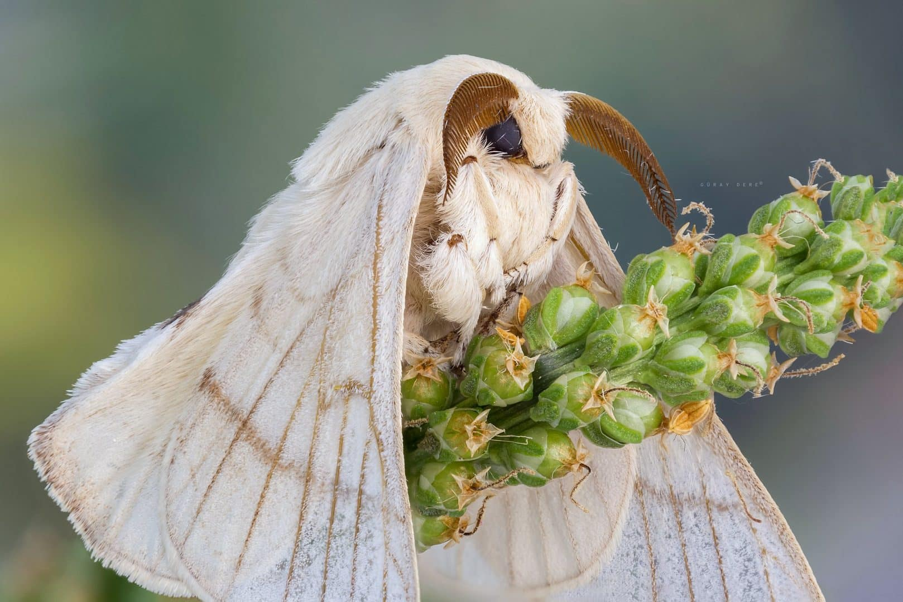

Você sabia?
O polvo tem três corações e o sangue azul!
Fato curioso
A Lua se afasta da Terra cerca de 3,8 cm por ano.
Inacreditavell
Existem mais estrelas no universo do que graps de areia em todas as praias da Terra.
veja tbm:
asista
muié

brunasso
bixo da seda
close bixo da seda
mariposa luna

zigoto do bixo da seda